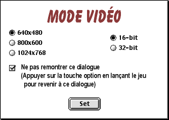

LANCEMENT
LANCEMENT
MODE VIDÉO
À la toute première utilisation de Cro-Mag Rally cette boîte de dialogue sur le mode vidéo apparaît à l'écran :

Le jeu revient par défaut aux paramètres illustrés ci-dessus. Il faut faire très attention en changeant ces paramètres car chaque changement demandera un surcroît de mémoire VRAM. Les Macs qui n'ont que 6 MB de VRAM doivent se servir de cette configuration minimum ou ils n'auront pas assez de VRAM pour toutes les textures de jeu. Les performances seront elles aussi affectées. Plus la résolution choisie est élevée, plus la vitesse du jeu sera ralentie.